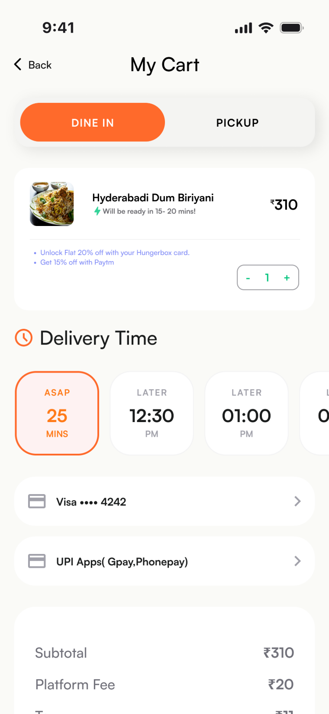
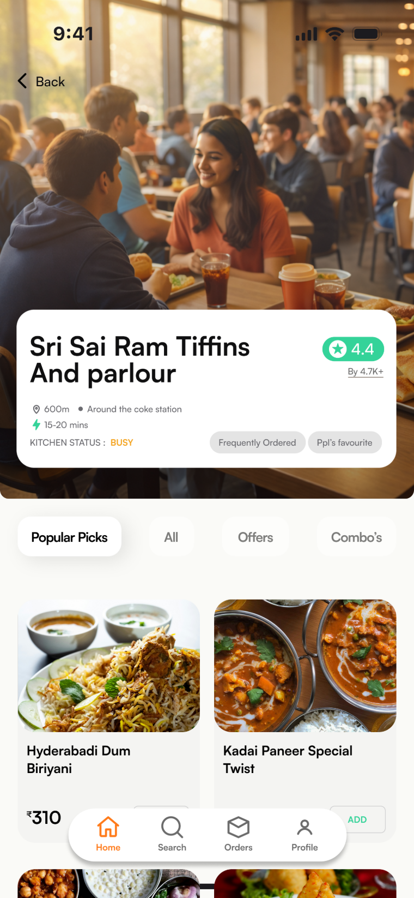
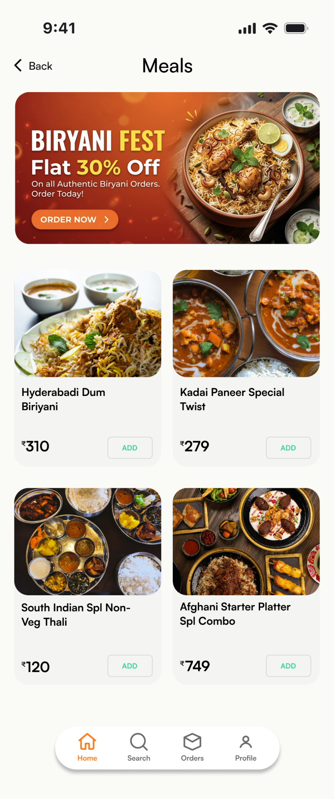

Foodzy.
Skip the queue. Eat smarter. Turning a 30-minute cafeteria wait into a timed pickup.
The short version
Foodzy is a campus food-ordering app that lets students browse and pre-order before they leave the lecture hall, then collect at a chosen time. It explores how UX reduces waiting, uncertainty and stress in campus dining.
The choice between a meal and a grade
University life moves fast; campus cafeterias do not. Students get roughly 45 minutes to refuel and spend 30 of them standing in a queue. That forces a bad trade: rush the meal and be late to class, or skip eating to stay on time.
What I learned
The flow, before the pixels
Three calls worth explaining
Delivery apps solve the wrong half of the problem on a campus. Letting students name a pickup time spreads the rush and makes the break plannable. It costs a step in checkout; predictability is worth it.

Every item and cafeteria carries a prep estimate and a live kitchen status. Research said uncertainty, not the wait, was what made students skip meals — so the number is never hidden behind a tap.

The price on the card is the price paid — no surge, no fees revealed at checkout. On a student budget, a surprise at the last step is a lost order.

The screens
Wireframes, type, colour
Orange for action, green for confirmation, indigo for information. One meaning per colour, so a glance is enough.
Where it landed
Moving the transaction from the counter to the phone gives a student back most of their break. The prototype covers the full journey — onboarding to pickup notification — and closes the two gaps neither cafeterias nor delivery apps address: choosing a pickup time, and seeing the wait before you commit.
What I would do differently: test the time-slot picker with real kitchen throughput. It assumes cafeterias can honour a slot, and that assumption deserves proof before build.